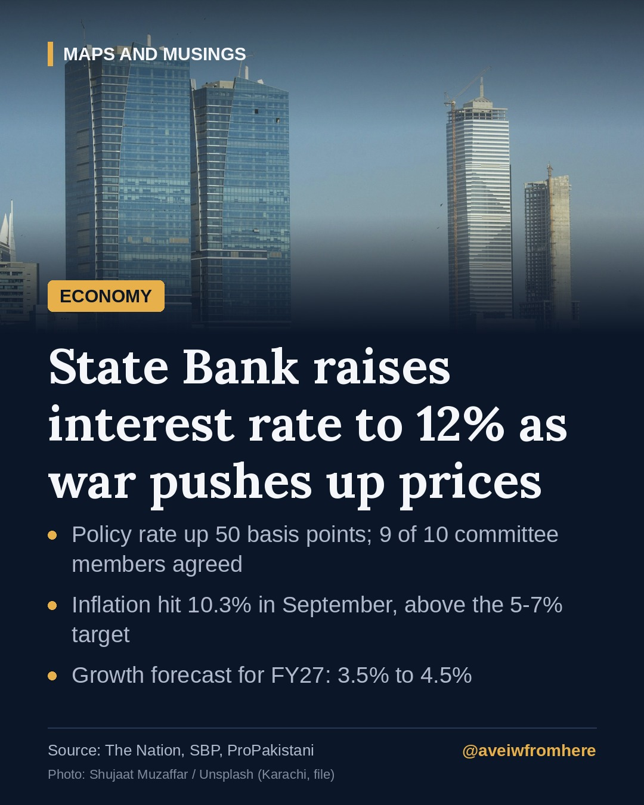

Why the State Bank just raised interest rates to 12%
The State Bank of Pakistan has made its first rate hike since June, lifting the policy rate by half a percentage point as war-driven energy costs push inflation above target.

The State Bank of Pakistan (SBP) has raised its policy rate by 50 basis points to 12%, its first increase since June. The decision of the Monetary Policy Committee was taken by a vote of nine to one, according to the bank.
Why now?
The short answer is inflation. Headline inflation reached 10.3% in September, well above the SBP's medium-term target range of 5 to 7%. The war in the Middle East has pushed up global oil and gas prices, and Pakistan imports most of its energy, so higher fuel costs feed quickly into transport, electricity and food prices.
A higher policy rate makes borrowing more expensive. The aim is to cool demand and keep inflation expectations from rising further, so that businesses and workers do not build ever-higher prices and wages into their plans.
What the bank expects
- Growth: the SBP still projects GDP growth of 3.5% to 4.5% for FY27.
- Reserves: the central bank's foreign exchange reserves stood at about $21.5 billion.
- Inflation: the bank expects price pressures to stay elevated in the near term while energy prices remain high.
Who feels it?
Businesses are divided. As Dawn reports, some trade bodies criticised the hike, arguing that costlier credit will hurt industry and investment at a difficult time, while others accepted it as necessary to protect the rupee and bring inflation down.
For ordinary borrowers, car loans, home financing and business credit linked to KIBOR are likely to become more expensive. Savers, on the other hand, may see slightly better returns on deposits and government savings schemes.
The bigger picture
Pakistan's policy rate peaked at 22% in 2023 before a long series of cuts. This small step back up is a reminder of how exposed the economy remains to events far from its borders, above all to the price of oil.